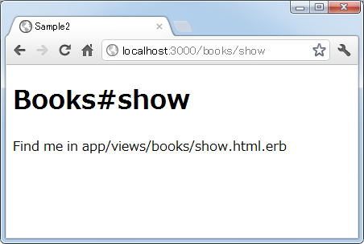
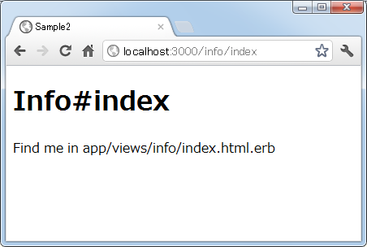
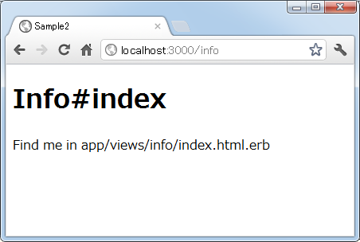
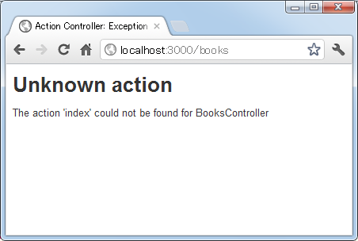

以前に使われていたルーティング
Railsではリソースをベースにしたルーティングの設定方法が主に使われるようになっています。リソースベースのルーティングとはリソース名を軸にしてリクエストURLや対応するアクション名をあらかじめ決められたルールに従って自動的に決めてしまうというものです。それに対してリソースベースではないルーティングとは、リクエストのURLとそれによって呼び出されるアクションを個別に設定していくものです。
リソースベースの考え方は少し分かりにくいところもあるので、先にリソースベースではないルーティング方法について解説を行ないます。まずここではまずRailsのバージョン3系になる前に使われていたルーティングの設定方法を解説します。
1.legacy wild controller ルーティング
2.動作確認
legacy wild controller ルーティング
まずはRailsの2系のバージョンで主に使われていたルーティングの設定方法です。「config/routes.rb」ファイルには色々な設定サンプルがコメントとして表示されていますが、今回使用するルーティングも最後のほうに記述されています。
Sample2::Application.routes.draw do # This is a legacy wild controller route that's not recommended for RESTful applications. # Note: This route will make all actions in every controller accessible via GET requests. # match ':controller(/:action(/:id))(.:format)' end
書式は次のとおりです。
match ':controller(/:action(/:id))(.:format)'
上記のルーティングを記述すると、利用者は決められた形式のURLを使うことで任意のコントローラやアクションの呼び出しを行なうことができます。次の例を見て下さい。
booksコントロールのnewアクションを呼び出したい場合 http://localhost:3000/books/new itemsコントロールのindexアクションを呼び出したい場合 http://localhost:3000/items/index
このように「http://(ホスト名)/コントロール名/アクション名」の形式のURLでリクエストを送信すれば、対応するアクションを呼び出すことができます。
また括弧の中は省略することが可能です。上記の例でもパラメータである「/:id」の部分や形式を表す「.:format」を指定していませんでした。アクションを表す「/:action」も省略可能なので「http://localhost:3000/books」のようなURLでリクエストを送ることもできます(アクションが指定されなかった場合は「index」アクションが自動的に呼ばれます)。
その為、先程書いた「itemsコントロールのindexアクションを呼び出したい場合」は、次のどちらのURLでリクエストを送信しても可能です。
http://localhost:3000/items/index http://localhost:3000/items
もしコントローラとアクションは必ず指定するようにしたい場合は次のように設定して下さい。
match ':controller/:action(/:id)(.:format)'
上記にように設定した場合は「http://localhost:3000/items」のようなURLでリクエストを送るとエラーとなります。
動作確認
それでは実際に試してみます。現在「sample2」アプリケーションには「info」コントローラと「books」コントローラが作成されており、「info」コントローラには「index」アクション、「books」コントローラには「show」アクションが定義してあります。
今回ルーティングの設定として「config/routes.rb」ファイルをテキストエディタで開き、次のように記述しました。
Sample2::Application.routes.draw do match ':controller(/:action(/:id))(.:format)' end
それでは準備ができましたのでRailsアプリケーションを起動して下さい。そしてまずブラウザから「http://localhost:3000/books/show」へアクセスして下さい。すると次のように表示されます。

リクエストのURLから「books」コントロールの「show」アクションが呼び出されました。では次に「http://localhost:3000/info/index」へアクセスして下さい。すると次のように表示されます。

リクエストのURLから「info」コントロールの「index」アクションが呼び出されました。
次はアクションを省略してリクエストを送信してみます。ブラウザから「http://localhost:3000/info」へアクセスして下さい。すると次のように表示されます。

アクションは省略可能なためエラーとはなりません。そしてアクションが省略された場合はデフォルトのアクションである「index」アクションが呼び出されますので結果的に「info」コントロールの「index」アクションが呼び出されました。では次に「http://localhost:3000/books」へアクセスして下さい。すると次のように表示されます。

アクションが省略されているため「books」コントローラの「index」アクションを呼び出そうとしますが、「index」アクションが作成されていませんのでエラーとなります。
このように今回設定したルーティングは今でも使用することができますし、設定を1つ記述するだけで指定の形式のURLでリクエストを送信すれば任意のアクションを呼び出すことができるため便利です。ただ現在この方法はあまり推奨はされていないようですので、テストの場合などを除いては利用されないほうがいいかもしれません。
( Written by Tatsuo Ikura )

著者 / TATSUO IKURA
初心者～中級者の方を対象としたプログラミング方法や開発環境の構築の解説を行うサイトの運営を行っています。